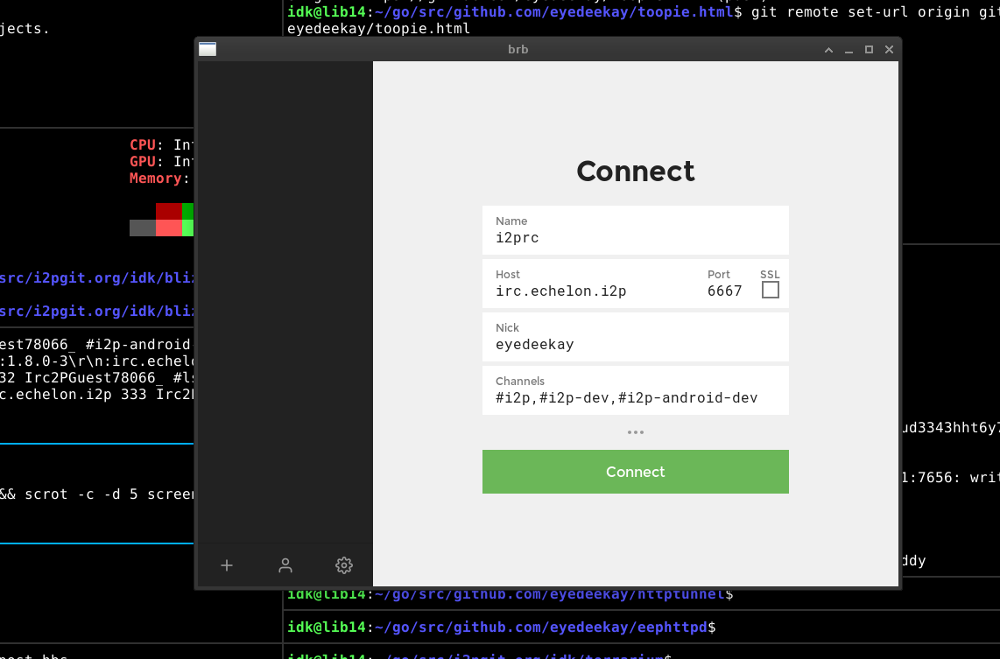

A pseudonymous software for groupchat based on IRC.
BRB incoroporates:
An IRC Client - The actual IRC client is khlieng/dispatch and they deserve most of the credit! All I did was add I2P support to their application, then wrap it up in the interface I happen to think was the most logical. In it's most basic use-case, it's an easy-to-use modern client to the Irc2P network or any in-I2P IRC server.
Dispatch is the reason I call the client "Blue Rubber Band," because print newspapers are often called "Dispatches" and in the US are frequently "Bound" in thin blue rubber bands.
BRB also wraps up an IRC server, using terrarium, a spin-off of another IRC server called horgh/catbox, which I picked because it had relatively few features and a simple, self-contained implementation. In older versions it used an IRC server called prologic/eris which also has easy-to-setup I2P support.
Lastly, using eyedeekay/sam-forwarder, the WebIRC interface provided by Dispatch is then forwarded back to the I2P network as an I2P Site. In this way, anyone who connects to your Dispatch interface over I2P can chat with you or others without the conversation leaving the server hosting the Dispatch/Terrarium combination instance. When used in this way, it could act as an anonymous replacement for something like Slack or Discord.
In addition to that, it sets up:

The result is a Modern-looking, no fuss Irc2P Client.
This was the first "ShellService" type plugin for I2P, a type of plugin which
runs an external, usually non-Java application as an I2P managed plugin. This allows
it to be correlated to the lifecycle of the I2P router that hosts it and is the
recommended way to install BRB.
brb is also available experimentally for Android. In this case, the webview parts are provided by the corresponding Android APIs. The final goal of the Android application is to implement all the same features as the Desktop application, including the Eris server. In this case, instead of a taskbar icon and a menu BRB provides:
brb uses the SAM API to set up it's connection to IRC networks inside of I2P. This means that it can support as many IRC networks as you want to connect to. With i2pd, the SAM API is already enabled. With Java I2P, you must enable it on the Config Clients page.
If you do not want to use either the WebView or Chromium to wrap the user-interface, you can instead use any web browser and direct it to localhost:7669. There is a container tab for this in [I2P in Private Browsing](https://github.com/eyedeekay/I2P-in-Private-Browsing-Mode-Firefox). This should be a reasonable baseline for non-sensitive I2P browsing.